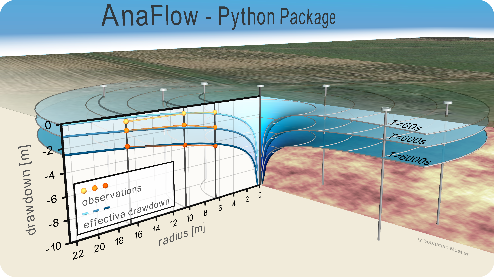

AnaFlow: A python-package containing analytical solutions for groundwater flow¶
Contents¶
Anaflow provides several analytical and semi-analytical solutions for the groundwater-flow-equation.
Dependencies¶
- [NumPy](http://www.numpy.org): 1.10.0 or higher
- [SciPy](http://www.scipy.org): 0.19.0 or higher
Installation¶
Just download the code from: https://github.com/MuellerSeb/AnaFlow/archive/master.zip and unzip the file.
Then run the following command from the source code directory:
pip install -U .
It is highly recomended to install the scipy-scikit umfpack to get a solver for sparse linear systems:
pip install -U scikit-umfpack
Under Ubuntu you can install the required SuiteSparse library with:
sudo apt-get install libsuitesparse-dev
- For further information have a look at: